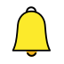
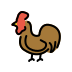
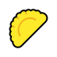
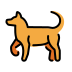
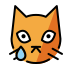
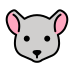

🎯 SVG 谜题 v4 · 专业素材库合成
底图：OpenMoji 专业画师 SVG（粗描边卡通，和参考图同风格），本地化到 openmoji/ 目录
我只负责：摆位 / 旋转 / 变色滤镜 / 音波轨迹等效果线合成 —— 有机体画质交给素材，不再手画

这是铃铛
这是
答案：掩耳盗铃素材合成
捂耳猴（OpenMoji）+ 响铃 + 音波线——铃铛是同一个素材原样复用，上下格一眼同物

这是公鸡
这是
答案：一毛不拔（铁公鸡）素材合成
同一只公鸡加灰度滤镜变"铁"，被拔落的羽毛 + 汗滴 + 拔毛作用线——素材变色是滤镜级的，100% 不走形

这是包子

这是
答案：有去无回（肉包子打狗）素材合成
包子沿虚线飞进狗嘴，只带出风线没有回程——狗是 OpenMoji 全身犬，比我手画的稳得多
这是猫



这是
答案：假慈悲（猫哭耗子）素材合成
OpenMoji 自带"哭脸猫"，老鼠躺平 + 头上标叉 + 飘出小幽灵——专业素材连表情都有现成的
素材来源：OpenMoji（CC BY-SA 4.0，4700+ 个，含动物/食物/物品/表情）· 已本地化到 res/xieyin_demo/openmoji/